Links
Description
Введение
-
Причинно-следственная связь — связь двух величин, при которой изменение одной величины порождает изменение другой.
-
Корреляция — это такая связь двух величин, при которой изменение одной из них сопутствует систематическому изменению другой. При этом связь может как быть, так и не быть причинно-следственной (например, обе величины зависят от третьей, но не зависят друг от друга).
-
Среднее арифметическое — сумма всех значений выборки, деленная на их количество.
-
Медиана — это такое число в выборке, что ровно половина из элементов выборки больше него, а другая половина меньше него. Медиану можно найти, упорядочив элементы выборки по возрастанию и взяв средний элемент (либо среднее арифметическое двух средних элементов, если число элементов четное).
-
Retention показывает, как новые пользователи возвращаются в приложение;
-
Daily Retention (дневной Retention), в частности, показывает, какая часть новых пользователей вернется в приложение на следующий день после первого запуска (Day 1 Retention), на второй день после первого запуска (Day 2 Retention), на день N после первого запуска (Day N Retention);
- Важно: обратите внимание и запомните, что отсчет начинается с Day 0 — дня запуска приложения. Это значит, что, например, когда мы говорим о Day 2 Retention, или втором дне после запуска, мы имеем в виду второй день после дня запуска приложения. Аналогичным образом считаем недели и месяцы, начиная с Week 0 и Month 0.
- N-Day Retention не обязан быть ниже, чем N – 1 Day Retention. Например, мы можем прислать пользователям пуш в Day 10 и при этом не присылать в Day 9, из-за чего в Day 10 приложение откроет больше пользователей, чем в предыдущий день.
1️⃣ Starting event — событие, на основе которого выбираются пользователи, используемые для расчета Retention.
В данном случае —
Launch first time(событие отправляется, когда пользователь впервые запускает приложение). 2️⃣ Return event — событие, которое характеризует активность пользователя, которую мы хотим изучить. В данном случае —Session start(событие отправляется каждый раз, когда пользователь запускает приложение). Сейчас мы изучаем, как люди возвращались в приложение, но нас может заинтересовать и Retention в использование определенной функциональности. 3️⃣ Calculated by 24-hour windows — это значит, что пользователь считается вернувшимся в Day 1, если он вернулся в период от 24 до 48 часов после события из Starting event. Другой вариант расчета — Strict calendar dates. В этом случае пользователь считается вернувшимся в Day 1, если он вернулся на следующий календарный день. Так мы рассчитывали Retention в заданиях выше.
Взвешенное среднее арифметическое — это нечто другое. Чтобы объяснить значение этого термина, рассмотрим пример. Представьте, что вы хотите рассчитать Retention на основе пользователей, которые первый раз запустили продукт 1 и 2 сентября:
- 1 сентября пришло 100 пользователей, и их Retention первых дней следующий: Day 0 = 100%, Day 1 = 40%, Day 2 = 30%.
- 2 сентября пришел один пользователь, и его Retention первых дней следующий: Day 0 = 100%, Day 1 = 0%, Day 2 = 100%. Среднее арифметическое Retention за 1 и 2 сентября будет равно:
- Day 0 =
(100% + 100%) / 2 = 100% - Day 1 =
(40% + 0%) / 2 = 20% - Day 2 = `(30% + 100%) / 2 = 65% Как вы можете заметить, среднее арифметическое значений Retention за 1 и 2 сентября дает нам не самое лучшее представление об общем Retention всего продукта. Проблема в том, что Retention за 2 сентября рассчитан на основе всего одного пользователя, а имеет такой же вес, как и Retention, рассчитанный на основе 100 пользователей, пришедших 1 сентября. Взвешенное среднее арифметическое учитывает вес каждой когорты, то есть то, на основе какого количества пользователей рассчитывался Retention для каждого из дней. Взвешенное среднее арифметическое в данном случае будет следующим:
- Day 0 =
(100% * 100 + 100% * 1) / (100 + 1) = 100% - Day 1 =
(40% * 100 + 0% * 1) / (100 + 1) = 39.6% - Day 2 =
(30% * 100 + 100% * 1) / (100 + 1) = 30.7%
Прогноз аудитории приложений
- В январе в приложении были только пользователи, пришедшие в январе (его только запустили);
- В феврале это будут те, кто пришел в феврале, и те, кто вернулся на следующий месяц из январских пользователей;
- И так далее.
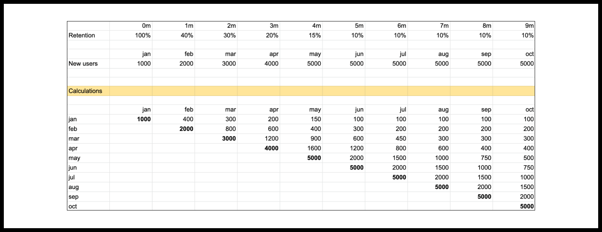
Retention и приток новых пользователей определяют динамику роста активной аудитории продукта.
Активная аудитория продукта за любой период — это сумма пользователей всех когорт, которые вернулись в этот период времени. Если вы знаете количество новых пользователей за прошлые периоды и их Retention, то вы можете легко подсчитать активную аудиторию всего продукта. Взгляд на активную аудиторию через призму когорт пользователей, выделенных на основе месяца регистрации, позволяет лучше понять, как именно устроен рост продукта. Растет ли сервис благодаря накачиванию продукта новыми пользователями? Или же рост — это следствие того, что продукт хорошо возвращает пользователей? Ответ на этот вопрос позволяет понять, насколько устойчивым является рост.
В следующей главе мы продолжим изучать принципы, определяющие рост продукта, через призму Retention и когортного анализа. На их основе мы введем базовый критерий product/market fit для продуктов, решающих регулярные задачи
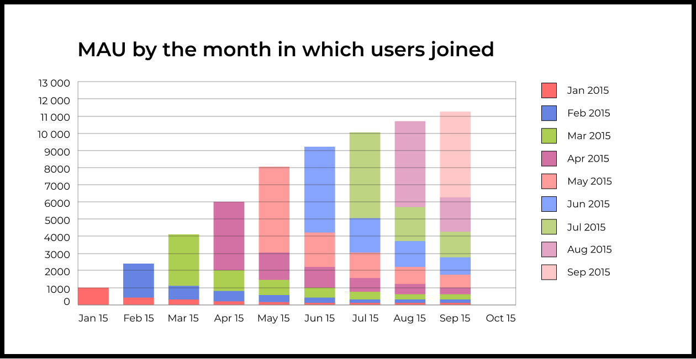
Метод прогнозирования дневного и недельного аудитории совершенно аналогичен, только для расчета потребуется дневной или недельный Retention и прогноз числа пользователей, которые будут приходить в приложение в каждый из будущих дней, либо каждую из будущих недель.Метрики продукта и метрики роста
Любой продукт — это магическая черная коробка, на вход которой подаются новые пользователи. Продукт их перерабатывает и выдает активных пользователей, выручку, прибыль, запросы в службу поддержки и так далее.
Характеристики того, как продукт перерабатывает новых пользователей, — это метрики продукта.
Конечный результат переработки (активная аудитория, доходы и так далее) — это метрики роста.
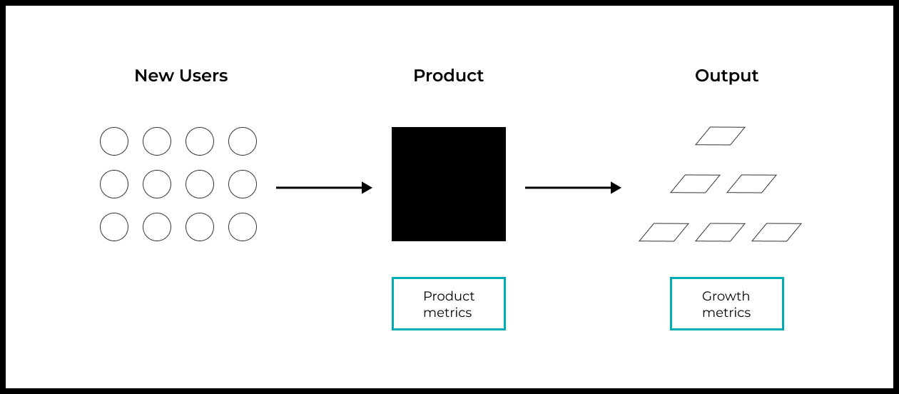
Метрики роста = f**(**продукт, число новых пользователей)
Метрики роста — это функция от метрик продукта и числа новых пользователей, которые подаются на вход черной коробки.
То, сколько людей было вылечено с помощью препарата, — это функция от характеристик препарата (насколько он эффективно лечит людей от болезни) и числа людей, которые его принимали.
- Вылеченные люди — метрика роста;
- Характеристики эффективности препарата — метрика продукта.
Число бракованных изделий — функция профессионализма ювелира (как часто он допускает брак) и того, сколько изделий он начал изготавливать.
- Количество бракованных деталей — метрика роста;
- Доля случаев, где ювелир допускает брак — метрика продукта.
Активная аудитория игры — это функция от характеристик самой игры (Retention) и числа новых пользователей, которые в нее пришли.
- Активная аудитория — метрика роста;
- Retention — метрика продукта.
Еще несколько примеров в формате таблицы.
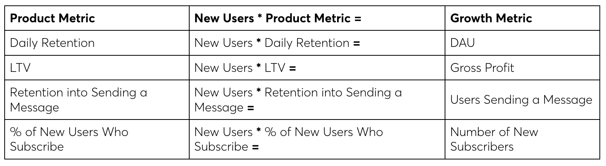
Вопросы, на которые отвечают метрики роста и метрики продукта
И метрики роста, и метрики продукта важны. Просто отвечают они на разные вопросы.
Метрики роста отвечают на вопросы о текущем состоянии бизнеса в целом:
- Растут доходы или падают?
- Сколько людей пользуется продуктом?
- Какова динамика активной аудитории?
Метрики продукта характеризуют сам продукт, вокруг которого вы строите бизнес. Они отвечают на вопросы:
- Насколько хорошо продукт удерживает пользователей?
- Сколько прибыли средний новый пользователь приносит за все время в продукте?
- Какая часть новых пользователей доходит до определенного места в продукте, например, экрана покупки premium-версии?
Как повлиять на ключевые показатели бизнеса (метрики роста)
Чтобы улучшить ключевые показатели бизнеса, то есть метрики роста, нужно:
- Увеличить число новых пользователей;
- Либо улучшить продуктовые метрики (через изменения в продукте).
Если вы работаете над мобильной игрой, то для увеличения доходов вы можете увеличить число новых пользователей, либо сделать игру интереснее, что увеличит доход с пользователя, а значит, и общий доход компании.
Как отличить метрики продукта от метрик роста
Как мы обсудили выше, метрики продукта характеризуют сам продукт, черную коробку: как продукт перерабатывает новых пользователей в другие материи.
Например, какая часть новых пользователей вернулась на седьмой день? Какая часть новых пользователей сделала покупку? Сколько заплатит новый пользователь за время жизни в продукте?
Метрики продукта не зависят напрямую от числа новых пользователей, которые приходят в продукт. Если вы подсчитаете метрику продукта на основе 10 000 новых пользователей, а потом на основе 1 000 000 таких же новых пользователей, разницы не будет. Если сегодня в продукт пришло 10 пользователей, а завтра придет 500 000, то метрики продукта не изменятся (сам продукт ведь не менялся).
Метрики роста, напротив, напрямую зависят от числа новых пользователей. Они отражают результат переработки новых пользователей с помощью продукта. Если изменится число новых пользователей, то и метрика роста изменится.
Почему многие компании используют метрики роста для оценки продукта
Первая причина — историческое наследие. Раньше основным источником информации о состоянии бизнеса были отчеты бухгалтерии, которые, по вполне понятным причинам, описывали бизнес в целом, а не продукт, вокруг которого он строится. В таких отчетах отражались преимущественно метрики роста: затраты, доходы, прибыль, число новых клиентов и тому подобное.
Вторая причина, уже более релевантная технологическому бизнесу, в том, что почти все системы аналитики по умолчанию показывают метрики роста, а не метрики продукта. Более того, многие из них даже не дают возможности подсчитать метрики продукта. Так аналитические продукты выступили в роли скрытого наставника — они приучили людей смотреть и делать выводы на основе того, что доступно и показывается в системе аналитики, а не на основе того, что может дать ответы на вопросы.
Третья причина в том, что работать с метриками продукта сложнее. Подсчитать и сравнить DAU легче, чем подсчитать и сравнить Retention разных версий продукта.
Из-за всего этого очень часто для сравнения двух версий продукта берутся метрики роста.
Из-за всего этого очень часто команды делают неправильные выводы и принимают неэффективные решения.
Большинстве случаев имеет смысл использовать метрики Retention и LTV (Lifetime Value).
Retention, как мы уже выяснили, — ключевая метрика, характеризующая то, насколько полезным находят продукт пользователи. Если часть новых пользователей начинает использовать продукт регулярно (кривая Retention выходит на плато), то значит, для определенной части рынка продукт приносит пользу — достигнут product/market fit.
Lifetime Value — метрика, которая показывает, сколько прибыли средний новый пользователь принесет за все время использования продукта. Эта метрика сочетает в себе все другие метрики монетизации продукта.
LTV = (Доля платящих от новых) ***** (Прибыль с платящего пользователя за все время жизни в продукте)
Дневная аудитория продукта является функцией от Retention продукта и числа новых пользователей, которые в него приходят.
LTV (Lifetime Value) показывает, сколько прибыли новый пользователь принесет за все время в продукте.
Поэтому, умножив LTV на число новых пользователей, вы получите прибыль (Gross Profit).
Ключевые метрики продукта
Метриками, на основе которых можно быстро понять состояние практически любого продукта, решающего регулярные задачи, являются:
- Retention;
- LTV (Lifetime Value).
Retention отвечает на вопрос, создает ли продукт ценность для пользователей и, как следствие, способен ли их удерживать.
LTV (Lifetime Value) показывает, сколько средний новый пользователь принесет прибыли за все время использования приложения. Это отражает, какую часть создаваемой для пользователей ценности компания может превратить в деньги.
Например, если LTV мобильной игры равен 1 прибыли за все время ее использования.
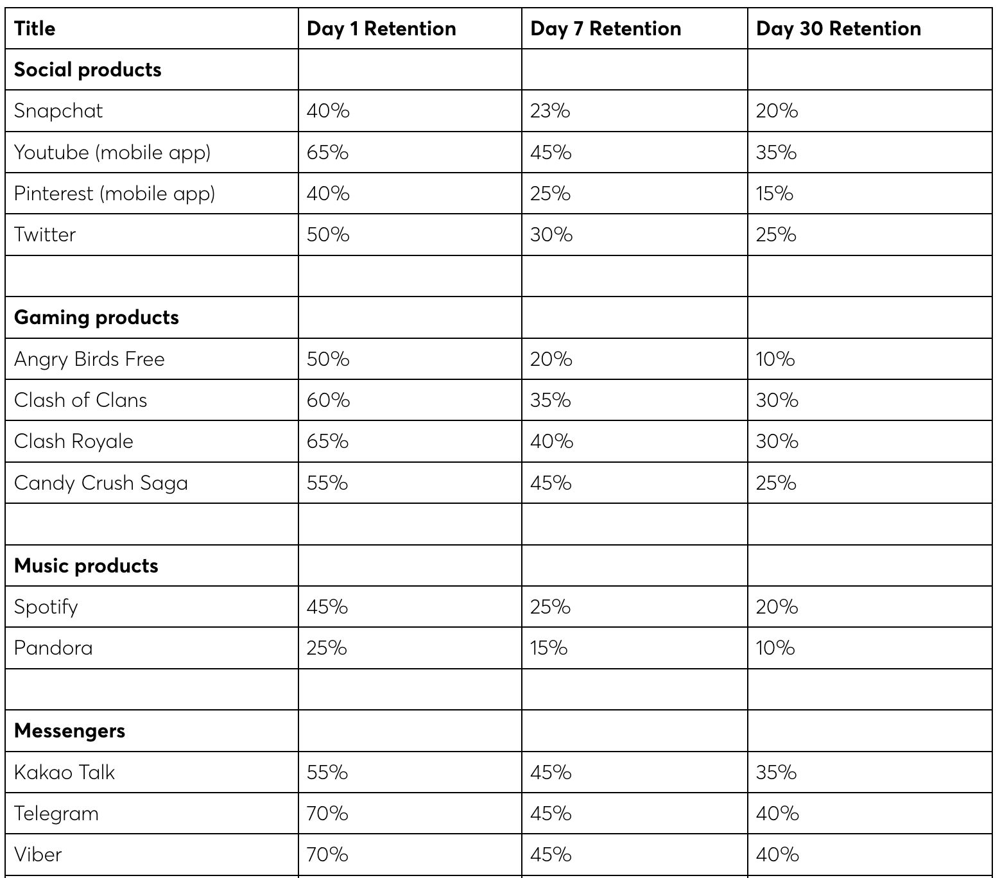
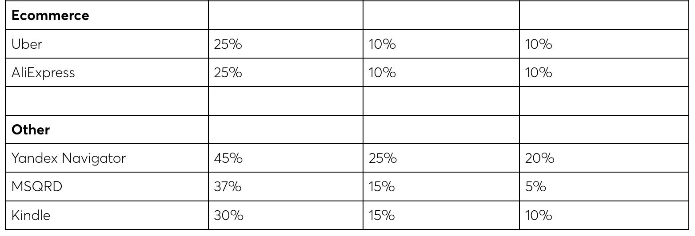
retention benchmark Что такое хороший Retention. Бенчмарки Retention для разных типов продуктовМетрики, нормированные на активную аудиторию, могут вводить в заблуждение
Например, в главе 2 мы подсчитали, что 30% дневной аудитории использует умный саджест. В теории это очень неплохой показатель для доли пользователей, использующих фичу. Но теперь нам известно, что люди пробуют умный саджест в первые дни после установки продукта, не находят в нем особой ценности, а потом уходят из продукта. Доля держится на высоком уровне лишь по той причине, что в продукт вливается большое число новых пользователей, которые в итоге составляют существенную часть активной аудитории. Принципиальное различие в том, что реальные метрики продукта нормируются на новых пользователей. Новые пользователи — это базовый материал, с которым работает продукт: то, что подается на вход черной коробки.
Метрики, рассмотренные в примерах выше, нормируются на активную аудиторию. А активная аудитория представляет из себя смесь пользователей, использующих продукт в разное время. В активной аудитории есть новые пользователи, есть те, кто провел в продукте два дня, а есть те, кто использует его уже больше года.
Так как новые пользователи отличаются от старых, метрики, нормированные на активную аудиторию, при изменении долей новых и старых пользователей в активной аудитории тоже меняются.
Можно ли использовать метрики, нормированные на дневную аудиторию
Да, можно, но делать это надо аккуратно. Нужно понимать, что изменения этих метрик могут быть связаны не только с изменениями продукта, но и с изменениями в структуре активной аудитории, на основе которой проводится анализ.
В ряде случаев использование метрик, нормированных на активную аудиторию, поможет быстрее ответить на вопрос, как сделанные изменения повлияли на пользователей. Особенно если изменения нацелены на тех, кто пользуется продуктом уже длительное время. В этом случае ждать, пока новые пользователи дойдут до этого этапа использования продукта, очень долго, и лучше взять метрики, нормированные на активную аудиторию. Так вы быстрее узнаете о влиянии сделанных изменений.
Но, еще раз повторим, с выводами на основе таких метрик надо быть очень аккуратными.
Нам нужно понять, как сделанные изменения в повлияли на метрики продукта. Для этого надо сравнить ключевые продуктовые метрики старой и новой версий. Обычно при таком сравнении метрики измеряются на основе новых пользователей, которые пришли в каждую из версий.
Новых, потому что они не имели опыта взаимодействия с продуктом, а значит, на их поведение в продукте будет влиять лишь его текущее устройство. Если новая версия имеет значимое отличие для пользователей, мы должны заметить это на метриках, характеризующих их поведение.
A/B-тест — это эксперимент, где:
- Пользователи случайно делятся на две группы;
- Первая группа пользователей (А) получает текущую версию продукта;
- Вторая группа (B) получает измененную версию продукта;
- После сравниваются ключевые продуктовые метрики, подсчитанные на основе пользователей из группы A и группы B;
- На основе подсчитанных метрик принимается решение о том, какая версия работает лучше.
Главное преимущество A/B-тестирования состоит в том, что между полученными группами пользователей разница определяется только изменениями, которые были сделаны в продукте. Поэтому единственная причина значимого колебания метрик — это продуктовые изменения. Ведь всё остальное полностью идентично для обеих групп, так как пользователи распределяются по группам случайно.
У A/B-тестирования есть и минусы:
- Для проведения A/B-тестов нужна специальная инфраструктура, которой у большинства компаний нет;
- A/B-тестирование требует, чтобы одна версия продукта содержала в себе всё необходимое для работы обеих тестируемых версий, что создает сложности для разработки;
- Бывают ситуации, когда A/B-тест запустить невозможно в силу сетевых эффектов или других особенностей продукта.
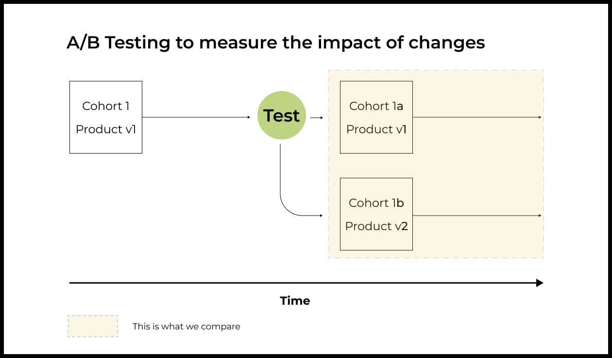
Когортный анализ — способ сравнить две версии продукта без A/B-теста
Более простой с технической точки зрения способ сравнения двух версий продукта — это когортный анализ. Для применения когортного анализа не требуется ни дополнительной разработки, ни специальной инфраструктуры.
Суть когортного анализа заключается в сравнении продуктовых метрик старой и новой версий продукта, подсчитанных на основе новых пользователей, которые в свое время пришли в каждую из сравниваемых версий продукта.
Работает это следующим образом:
- Берутся новые пользователи, которые пришли в старую версию продукта;
- Рассчитываются продуктовые метрики, которые характеризуют их поведение в старой версии продукта;
- Аналогичным образом берутся новые пользователи, которые пришли в новую версию продукта;
- Для них тоже рассчитываются продуктовые метрики, которые характеризуют их поведение в новой версии продукта;
- Затем сравниваются метрики, полученные для каждой из версий;
- На основе этого сравнения делаются выводы.
Именно такой анализ является основой продуктовой аналитики.
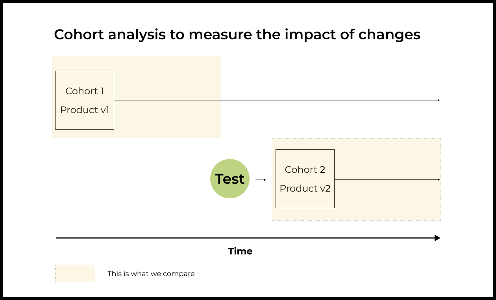
Для того чтобы сравнить две версии продукта с помощью когортного анализа, должны быть выполнены следующие условия:- Пользователи в когортах должны быть похожи. Мы не можем сравнивать когорты, где в одной будут пользователи из Филиппин, а в другой — из США. Различия в метриках будут связаны с тем, что сами анализируемые пользователи разные;
- Нет других факторов, которые могут повлиять на поведение и метрики пользователей, приходивших в разные версии приложения: сезонность, технические проблемы в одной из версий и так далее.
Статестическая значимость Доверительным интервалом с уровнем доверия P (обычно 95%) для конверсии онбординга будет интервал [x,y], который с вероятностью P содержит реальное значение конверсии онбординга Q. Если вы получили оценку конверсии онбординга на основе выборки пользователей (T), а потом подсчитали доверительный интервал [x,y] с уровнем доверия 95%, то в 95% случаев реальное значение конверсии онбординга будет находиться в пределах полученного вами интервала. Важное свойство доверительных интервалов состоит в том, что их ширина становится меньше с ростом размера выборки, на основе которой считается оценка конверсии.
Как рассчитать доверительный_интервал для конверсий
Для расчета доверительного интервала для конверсии необходимо знать:
- Число пользователей, на основе которых считалась оценка конверсии (N — число пользователей в выборке или в когорте);
- Полученное значение оценки конверсии (T);
- Уровень доверия доверительного интервала, который вы выбираете сами (P — обычно 95%). Если у вас есть все необходимые данные, то доверительный интервал для конверсии рассчитывается следующим образом.

Реальная конверсия онбординга (Q) будет с вероятностью 95% находиться в указанном выше интервале. Если вы захотите повысить или понизить уровень доверия доверительного интервала, вам надо будет заменить коэффициент в формуле расчета:
- Уровень доверия 90% = 1.645
- Уровень доверия 95% = 1.96
- Уровень доверия 99% = 2.575 Способ получения коэффициентов для других уровней доверия можно найти тут. онлайн-калькулятор для расчета доверительного интервала.
Две наиболее часто решаемые задачи при помощи доверительных интервалов В реальности вам редко нужен сам доверительный интервал. Доверительный интервал — это лишь инструмент, который позволяет ответить на определенный продуктовый вопрос. Обычно задают два вопроса:
- Как между собой соотносятся реальная конверсия в определенное действие и некоторое значение?
- Как между собой соотносятся реальные конверсии в определенное действие в двух версиях продукта?
Обратите внимание, что мы всегда задаем вопрос про реальные конверсии. Поменялся ли продукт в результате наших изменений или нет?
Оценки конверсий мы и так знаем, ведь мы подсчитали их на основе имеющихся у нас выборок пользователей. Но, к сожалению, их прямое сравнение между собой не поможет ответить на вопрос о влиянии на продукт, мы лишь сравним показатели двух конкретных групп пользователей.
Алгоритм решения задачи сравнения реальной конверсии с константой
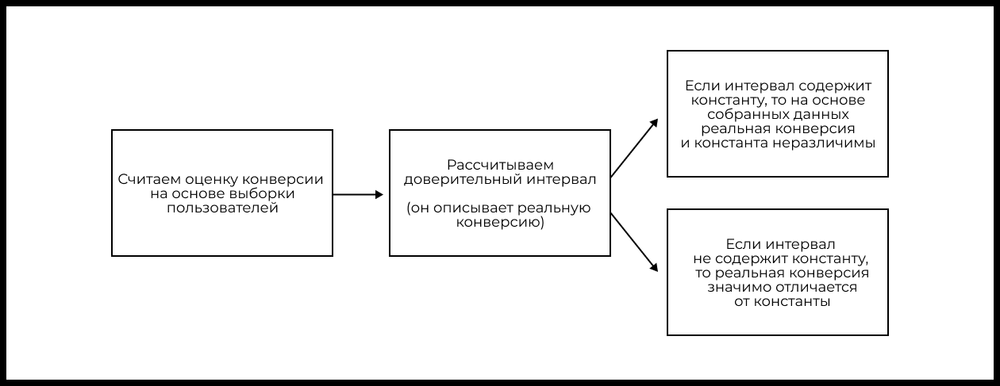
Сравнение реальных конверсий двух версий приложения В первой версии мы привлекли 10 000 пользователей и получили оценку конверсии в покупку в 2%. После этого мы поменяли игру, выкатили вторую версию, привлекли 20 000 пользователей и получили оценку конверсии в покупку в 3%. Мы привлекали одинаковых пользователей и никакие другие факторы, способные влиять на продуктовые метрики, не менялись.
- 2% — это оценка конверсии (Т1), рассчитанная на конкретной выборке пользователей, неизвестной нам реальной конверсии (Q1) в покупку первой версии игры;
- 3% — это оценка конверсии (T2), рассчитанная на конкретной выборке пользователей, неизвестной нам реальной конверсии (Q2) в покупку второй версии игры;
- Нам хочется понять, можем ли мы утверждать на основе собранных данных, что Q2 > Q1.
Сравнение двух конверсий между собой идентично сравнению разницы этих конверсий с нулем:
- Изначально мы сравнивали Q2 и Q1;
- Теперь мы сравниваем Q2 – Q1 и Q1 – Q1, то есть Q2 – Q1 и 0.
Алгоритм решения поставленной задачи следующий:
- Находим разницу между оценками конверсий. Она равна 3% – 2% = 1%. Разница конверсий вполне может быть отрицательной — это нормально.
- Доверительный интервал для разницы двух конверсий считается по следующей формуле: Где доверительный интервал c уровнем доверия 95% в нашем случае будет равен:

В результате расчетов получается (0.0064 ; 0.0136), или (0.64% ; 1.36%).
Интуитивная трактовка полученного доверительного интервала: с вероятностью 95% разница реальных конверсий в покупку между второй и первой версиями игры лежит в интервале (0.64% ; 1.36%).
Если полученный интервал не включает 0, можно считать, что изменение конверсии статистически значимое. Если же интервал содержит 0, мы вынуждены сказать, что статистически значимой разницы между результатами нет. То есть на основании имеющихся данных конверсии в покупку в первой и второй версиях игры неразличимы.
В случае рассматриваемого примера 0 не попадает в интервал, поэтому рост конверсии в покупку в игре статистически значимый. То есть рост конверсии связан с изменениями в продукте, а не со случайностью.
Алгоритм сравнения реальных конверсий двух версий продукта

Формула расчета доверительного интервала с уровнем доверия 95% разницы двух конверсий:

Не стоит запускать разработку новой фичи прежде чем нет пониманием по ценности продукта в целом Дело в том, что наши с тобой представления о продукте сильно расходятся с мнением команды. Мы уже поняли, что у Instachat есть фундаментальные проблемы. Продукт не достиг product/market fit, новые пользователи не видят ценности и быстро уходят. Поэтому сейчас нет смысла вкладываться в фичу, которая имеет шанс заработать только при наличии огромной аудитории, но при этом нарастить эту самую аудиторию не помогает. Сперва надо создать ключевую ценность продукта, которая позволит превращать новых пользователей в регулярных. Но ваша продуктовая команда считает иначе. Насколько я понимаю, они все еще думают, что Instachat — это прорывной продукт, который существенно лучше своих конкурентов, поэтому в ближайшее время завоюет рынок и соберет огромную регулярную аудиторию. Возможно, тогда имело бы смысл рассмотреть возможность реализации такой функциональности. При этом все равно встает вопрос о приоритетах. Нет ли других более полезных для пользователей и бизнеса проектов, которые можно сделать? Перед разработкой какой-либо новой функциональности всегда стоит провести анализ и ответить на вопросы: - Почему важно это сделать? - На что мы можем рассчитывать по результатам реализации функциональности? - Как потенциальное влияние этого проекта соотносится с другими? Так как разработка для всех технологических команд является очень дорогим и ограниченным ресурсом, новые идеи должны максимально исследоваться и валидироваться на берегу. Еще до первой написанной строчки кода. В данном случае я бы рекомендовал тебе начать с оценки востребованности подобной функциональности в Instachat. Нам важно понять, насколько такая функциональность способна создать ценность для пользователей и для бизнеса. Наличие такой оценки даст достаточно контекста для предметного разговора с командой о целесообразности реализации фичи.
Путь пользователя до новой фичи
Чтобы оценить потенциал новой функциональности, нужно создать модель, описывающую путь пользователя в продукте до этой новой фичи.
В случае с бронированием ресторана в Instachat путь будет следующим:
- Пользователи отправляют сообщения;
- В конкретном сообщении поднимается тема, которую мы считаем подходящей, чтобы предложить забронировать ресторан;
- Пользователю показывается блок с предложением забронировать стол в ресторане;
- Пользователь нажимает на предложенный блок с рекомендацией заведений;
- Пользователь переходит на специальный экран, где находит подходящее заведение и бронирует его.
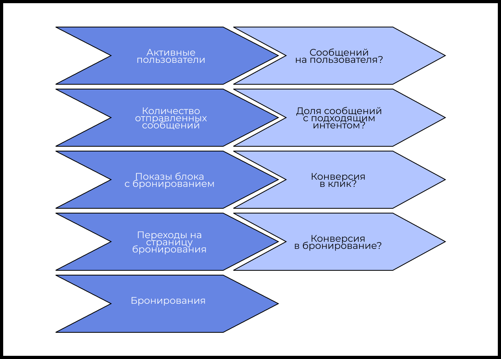
Как оценить конверсии
Есть несколько способов оценить конверсии:
- Сделать предположение на основе конверсий для похожих ситуаций. Например, у нас в приложении уже может быть сделана похожая функциональность, либо можно взять данные из открытых источников о конверсиях для схожих продуктов.
- Провести тест, не создавая всю функциональность целиком, а лишь ее малую часть. Например, мы в Instachat можем запустить только показ попапа с предложением забронировать ресторан для пользователей, которые обсуждают место, где можно поесть, затем выкатить эксперимент на маленькую долю пользователей и получить примерную конверсию в нажатие этого попапа. Так мы экономим ресурсы, не создавая всю функциональность целиком, но при этом можем заранее оценить востребованность фичи в будущем.
Какая должна быть выборка, чтобы получить доверительный интервал с заданной точностью
Формула для расчета необходимой выборки для получения доверительного интервала заданной точности выглядит следующим образом:

Здесь “conf int” — это доверительный интервал, который мы хотим получить, а T — оценка конверсии.
Важная особенность этой формулы в том, что для того, чтобы получить доверительный интервал в ±1% для конверсий, значение которых примерно равно 50% и 3%, потребуется совершенно разное число пользователей.
В центре диапазона (50%) потребуется максимальное число пользователей. Чем ближе к краям (к 0% или 100%), тем все меньшее число пользователей нужно для достижения заданной точности.
Что делать, если T (оценка конверсии) неизвестна Бывают ситуации, когда надо оценить необходимую выборку, но у вас нет даже примерного понимания, какой будет изучаемая конверсия (T).
В этом случае можно брать T = 50%, так как тогда вы получите выборку, достаточную для достижения заданной точности в середине интервала, а это максимально возможное значение.
Типичные конверсии в интернете
Чтобы ответить на следующие вопросы, вам потребуется знание типичных конверсий в интернете.
Важно: указанные ниже цифры приблизительны. Например, конверсия в покупку в интернет-магазинах может кардинально различаться для разных категорий товаров, для пользователей из разных источников трафика или разных стран.
Но понимание примерного диапазона значений различных конверсий поможет вам быстро в уме прикидывать экономику продуктов и иметь ориентиры того, что хорошо, а что плохо.
Конверсия из показа в клик для результатов поиска в Google в зависимости от места в органической выдаче
- 1 позиция — 43%
- 2 позиция — 37%
- 3 позиция — 29%
- 4 позиция — 19%
- 5 позиция — 10%
Контекстная реклама в поисковиках
- Средний СTR из показа в клик — 2%
Реклама в Facebook в ленте новостей
- Средний CTR из показа в клик — 0.9%
- Для сегмента Legal — 1.6%
- Для сегмента Employment & Job training — 0.47%
Конверсия на странице приложения в App Store/Google Play из показа в скачивание
- Для бесплатных игр медианное значение — 20%
- Для бесплатных приложений медианное значение — 30%
- 75% бесплатных игр Google Play имеют CTR ниже 25% (75 процентиль)
- 75% бесплатных приложений в Google Play имеют CTR ниже 40% (75 процентиль)

Конверсии email-рассылок
- Open rate — 21.5%
- Click rate — 2.3%
Конверсия в платящего пользователя для бесплатных мобильных игр
- Средняя — 1–2%
- Хорошие игры — 3–5%
- Топовые игры — 5–10%
- Топовые игры, нацеленные на узкую специфичную аудиторию — до 15%
Конверсия посетителя интернет-магазина в покупателя
- Средняя в мире – 3%
- США – 2.5-3.5%
Конверсии в воронке SaaS-сервисов
- Конверсия в использование триальной версии с посадочной страницы — 10%
- Конверсия из триальной версии в платную — 15%
Ранее мы подсчитали на основе выборки из 100 сообщений, что 3% сообщений имеют нужный нам интент для показа саджеста с предложением забронировать ресторан.
Но 3% — это лишь оценка конверсии, поэтому затем мы посчитали доверительный интервал. С вероятностью 95% конверсия находится в интервале от 0 до 6%.

Какой должна быть дневная аудитория приложения, чтобы подобная интеграция приносила 1 за каждое бронирование.
Мы хотим зарабатывать $100 000 в месяц, значит, каждый месяц через нас должно проходить 100 000 бронирований.
В месяце в среднем 30 дней, поэтому в день должно быть 3333 брони.
Единственный недостающий параметр для расчета — это соотношение числа отправляемых сообщений к дневной аудитории. На основании данных за 13 апреля этот параметр равен 14164 / 6701 = 2.1137.
Используя наши оценки, получаем следующую формулу:
100000 / 30 / 0.03 / 0.02 / 0.03 / 2.1137 = 87 611 858 , или примерно 90 миллионов DAU.
Сложный мир, или что может быть не так с оценкой
Мы сделали ряд предположений для конверсий основных узлов модели и получили оценки, которые нас интересовали. Но наши предположения могут оказаться ошибочными.
Например, мы оценили долю запросов с интересующим нас интентом на случайной выборке отправленных сообщений Instachat на данный момент. Эта цифра может измениться, если команда решит проблему возвращения пользователей и доля регулярных пользователей в активной аудитории станет существенно больше.
Мы оценили конверсию баннера, показываемого в чате, предполагая, что он похож на контекстную рекламу. Но если пользователи будут регулярными, а подобная функциональность станет востребованной у определенного сегмента, пользователь будет ждать показа баннера, чтобы забронировать ресторан. Тогда наша оценка окажется сильно заниженной.
При оценке конверсии из клика на баннер в бронирование мы могли не учесть, что:
- Трафик из мессенджера может сильно отличаться от поискового или органического трафика на мобильную версию сайта;
- На конверсию будет влиять то, насколько точно мы будем угадывать интент при показе баннера;
- Конверсия будет сильно зависеть от города или региона, поскольку не везде нужна бронь, чтобы сходить в ресторан;
- Конверсия будет зависеть от качества покрытия и данных у партнерского сервиса в конкретном регионе;
- Конверсия также будет зависеть от ряда других факторов.
Как же учесть все возможные тонкости?
Используйте модель для изучения возможных сценариев
Мы создали модель в Google Sheets не столько для того, чтобы получить конкретные значения, сколько для того, чтобы изучить возможные сценарии развития ситуации.
Например, что будет если конверсия в бронирование будет не 3%, а 30% или 1% (и так далее). Так вы сможете рассмотреть оптимистичный и пессимистичный варианты, и тем самым зададите диапазон возможных значений.
Наличие модели позволит определить показатели, при которых разработка данной функциональности имеет смысл. В этом случае, имея конкретные цели по ряду ключевых показателей, можно пойти и с помощью недорогих экспериментов попытаться проверить их достижимость.
Модель
[Модель для оценки функциональности бронирования ресторанов в чате]
Меняя значения конверсий в такой модели, можно быстро оценивать перспективы для разного набора изначальных предположений, тем самым очерчивая возможные сценарии развития.
Эта модель позволяет понять, насколько эта конкретная фича способна дать ценность пользователям Instachat, а также самому бизнесу Instachat.

Новые рынки — это новые способы решения старых потребностей
Потребности людей и бизнесов практически не меняются. Благодаря техническому прогрессу меняется способ их удовлетворения.
Вот что на эту тему говорит инвестор Аркадий Морейнис:
«Распределение денег по статьям бюджетов у ваших потенциальных потребителей известно и фиксировано — говорим ли мы о бизнесах или розничных потребителях. Давайте понимать «статьи расходов» в широком смысле. Например, если это реклама, то неважно — это интернет, телевизор или принт. Если это расходы на детей, то в общем случае — это расходы на образование, одежду и игрушки или развлечения. Новые рынки — это обычно не новые рынки, это новые формы реализации старых известных потребностей. Просто бюджеты перераспределяются на другие продукты в рамках тех же статей расходов».
Новый продукт должен быть лучше старого — создавать добавочную ценность
«Главное, что должен сделать каждый технологический стартап, это создать продукт, который по меньшей мере в 10 раз лучше решает некоторую задачу, чем уже существующие способы ее решения. Быть лучше в 2 или 3 раза — недостаточно для того, чтобы люди переключились на новый продукт с необходимой вам скоростью или в необходимом вам объеме».
Ben Horowitz (Бен Хоровиц)
- Скорость — это критически важная характеристика браузера. Chrome был заметно быстрее других браузеров в 2009 году;
- iPhone был на порядок функциональнее других телефонов в 2007 году. Перейти на обычный телефон после начала использования iPhone было невозможно;
- Для продавцов на eBay принимать платежи через PayPal было намного быстрее, дешевле и удобнее, чем с помощью чеков. Этих преимуществ перечисленным продуктам оказалось достаточно, чтобы убедить существенную часть их раннего целевого рынка изменить своим старым привычкам.
Пример 1:
- Если у семьи нет стиральной машины и все в этой семье стирают в тазике руками, то ее покупка принесет им условные 100 единиц добавочной ценности;
- Если у семьи есть старая, часто ломающаяся стиральная машина, то покупка новой принесет им условные 50 единиц добавочной ценности;
- Если у семьи есть хорошая стиральная машина, то покупка еще одной не принесет им никакой добавочной ценности.
Пример 2: WhatsApp очень быстро стал популярен в Бразилии. В стране невысокий уровень дохода, и рынок SMS был устроен так, что пользователи платили за каждое сообщение. Поэтому бесплатное неограниченное общение через WhatsApp давало 100 единиц добавочной ценности.
В США уровень жизни существенно выше, а SMS продавались пакетами как часть тарифов на мобильную связь, поэтому воспринимались условно бесплатными. В итоге WhatsApp дал американским пользователям существенно меньше единиц добавочной ценности и достиг на американском рынке меньших успехов.
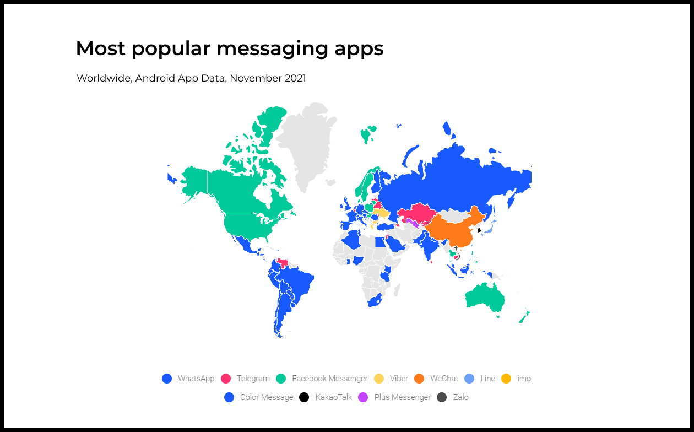
Модель продукта
На самом старте модель строится только на основе теоретических представлений команды:
- гипотез о ценности продукта
- целевые пользователи
- каналы дистрибуции
- возможные способы монетизации.
Базовая модель продукта — модель ведра Продукты длительного использования хорошо описываются моделью ведра. Это базовая модель, с нее полезно начинать, а дальше уже усложнять и адаптировать ее под конкретный продукт и задачи.
Почему ведро?
- Вы приводите новых пользователей в продукт = заливаете воду в ведро;
- Часть из них уходит, так как не находит для себя ценности в продукте = вода выливается через отверстия в ведре;
- Остальные остаются, поскольку видят ценность и используют продукт = вода осталась в ведре.
Модель ведра говорит нам, что неуспешные пользователи уходят из-за дыр в продукте.
- Что это за дыры? Как их можно выявить?
- Можно ли пообщаться с пользователями, которые решили не оставаться в продукте, и выяснить причины, почему?
- Можем ли мы решить эти проблемы? Если да, то как? Если нет, то почему?
- Если мы решим эти проблемы, то будут ли пользователи выбирать наш продукт вместо альтернатив?
- Когда выявлены проблемы и придуманы решения, как можно получить сигнал о том, работает ли решение?
Также модель ведра говорит нам, что часть пользователей остается в продукте или, как минимум, остается дольше других.
- Почему они остаются? Какую ценность они находят?
- Соответствует ли эта реальная ценность той теоретической, которую мы закладывали в продукт при разработке?
- Хорошо ли мы доносим эту реальную ценность до всех новых пользователей?
- Была ли понятна эта реальная ценность пользователям, которые ушли из продукта?
- Если окажется, что мы не доносим реальную ценность, то как это правильно делать?
- Кто те пользователи, которые остаются? Может быть, они представляют какой-то специфичный сегмент аудитории с отличающейся задачей или особым контекстом?
- Можем ли мы получить больше таких пользователей? Как?
Путь от нового пользователя к регулярному
Если новые пользователи уходят, то проблема может быть:
- В отсутствии задачи, которую продукт хочет решать, как таковой;
- В отсутствии задачи именно у тех пользователей, которых мы привлекаем (у других она может существовать);
- В отсутствии достаточной добавочной ценности относительно альтернатив, чтобы убедить пользователей изменить привычки;
- В неправильном способе донесения ценности продукта (ценность есть, но люди ее не понимают). В случае с Instachat мы определили задачу как передачу информации между людьми.
Мы знаем, что эта задача у людей есть, так как они уже используют другие продукты для ее удовлетворения. Поэтому мы можем откинуть первую причину.
Также маловероятно, что мы привлекаем в Instachat не тех пользователей, так как продукт изначально целится в достаточно широкую аудиторию. Может быть, мы привлекаем не самый нуждающийся в таком продукте сегмент, но видеть хотя бы какие-то признаки жизни продукта мы все равно должны.
Остается два варианта:
- Либо Instachat не дает пользователям достаточно добавочной ценности по сравнению с текущими вариантами решения задачи, чтобы их заменить;
- Либо мы плохо объясняем или доносим до пользователей ценность продукта.
Усложненная модель продукта Instachat
Мы начали с модели ведра, а потом детализировали ту его часть, где вода заливается в ведро. То есть то, как продукт доносит ценность до нового пользователя.
Мы сделали это, чтобы лучше понимать, где именно мы теряем пользователей. Теряем ли мы их еще до того, как они достигают места, где могут испытать ценность продукта, либо у нас дырявое дно и заложенная в продукт ценность не является достаточной, чтобы люди изменили свои привычки.
Мы сформировали критерий того, что пользователь испытал предполагаемую ценность продукта, а также определили набор условий, которые должны быть выполнены, чтобы это могло произойти.
Путь пользователя до предполагаемой ценности в нашей модели выглядит следующим образом:
- Новый пользователь запустил приложение;
- Пользователь включил пуш-уведомления (это делает канал коммуникации через мессенджер надежным);
- У него появились контакты в Instachat (без контактов невозможно пользоваться Instachat);
- Пользователь вступил в переписку (отправил сообщение);
- Пользователь получил подходящий саджест Smart Reply и воспользовался им (испытал предполагаемую ценность продукта);
- Пользователь прочувствовал пользу Smart Reply и понял, чем новый способ общения лучше старого;
- Пользователь стал регулярно использовать Instachat для общения.
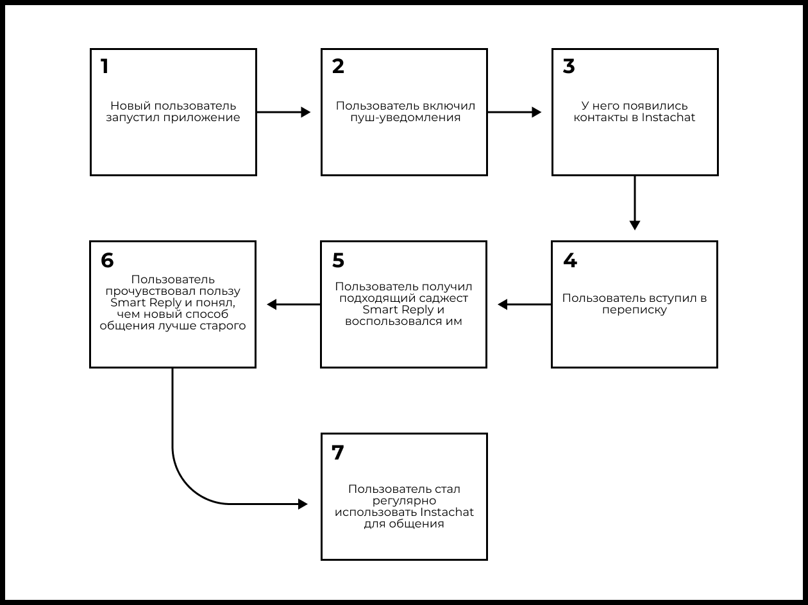
Экспериментальный подход требует смены парадигмы мышления команды
Команды, которые не используют эксперименты, обычно исходят из предположения, что знают свой продукт, своих пользователей, что и как надо сделать, чтобы добиться результата.
Новая идеология, напротив, подразумевает, что команда мало знает о продукте и пользователях, и это открывает возможности для развития и улучшения.
В старой парадигме релиз — это финальный результат работы. С экспериментальным подходом релиз — это лишь промежуточный шаг, необходимый для того, чтобы собрать данные, на основе которых решить, что делать (или не делать) дальше. Такой подход требует намного больше усилий от разработчиков и дизайнеров, так как в продукте все постоянно меняется в результате новой информации, которую получает команда. Это вызывает естественное сопротивление. Кто хочет многократно переделывать одно и то же?
Дизайн эксперимента
Любой эксперимент начинается с гипотезы. В ней формулируется предположение о том, как некоторое изменение может привести к желаемому результату.
Следующий шаг — определение конкретного способа проверки гипотезы. Надо понять, что именно мы меняем в продукте, чтобы проверить гипотезу. Выбрать пользователей и момент, когда они становятся частью эксперимента. Именно в этот момент пользователи будут случайно распределяться в тестовую и контрольную группы. Очень важно, чтобы опыт пользователей до распределения по группам был одинаковым, а распределение было случайным. Это обеспечивает честность эксперимента.
Дальше определяются метрики, которые позволят измерить влияние сделанного изменения. Метрики всегда должны быть определены заранее. Конечно, по итогам эксперимента вы изучите, как изменения влияют на все ключевые узлы модели продукта, но сам эксперимент всегда должен быть направлен на вполне конкретную метрику. Вы заранее должны продумать, на что и каким образом повлияет разрабатываемая функциональность в продукте.
На практике полезно заранее оценить ожидаемый эффект от изменения, либо же определить тот уровень эффекта, который компании интересен. Например, мы решаем, что если в эксперименте изменение метрики X будет меньше, чем на N%, то нам это неинтересно, а значит добавлять тестируемую функциональность в продукт мы не будем.
Зная ожидаемый эффект, можно оценить необходимую выборку для тестирования гипотезы. Зная выборку, можно определить время и ресурсы, необходимые для получения результатов.
Сделать подобные оценки важно, потому что время, нужное для получения достаточного количества данных, должно быть адекватным. Если для получения результатов эксперимента вам требуется три месяца, возможно, его не стоит проводить сейчас, так как его потенциальное влияние на метрики незначительное.
Последний, но самый важный шаг. Необходимо понять, какое решение будет принято на основе результатов эксперимента. Если эксперимент никак значимо не повлияет на будущее продукта, зачем его проводить? То, что вы будете делать на основе результатов эксперимента, должно быть определено еще до его старта. Конечно, вы можете получить совершенно неожиданный результат и будете вынуждены изменить изначальный план действий. Но само наличие такого плана позволяет продумать эксперимент глубже, а также откинуть ненужные тесты на этапе их дизайна.
Шаблон дизайна эксперимента
- Гипотеза. Чего и как мы хотим добиться;
- Что делаем в продукте. Как выглядит опыт тестовой и контрольной группы;
- На каких пользователях тестируем. Какие пользователи и в какой момент становятся частью эксперимента;
- Ключевые метрики для оценки эксперимента. Что должно измениться, как это измерить;
- Ожидаемый эффект. Определение размера выборки для эксперимента;
- План действий в зависимости от результатов эксперимента. Если X, то делаем Y, а если Z, то делаем Q.
Долгосрочные кумулятивные эффекты. Добавленный контакт может не сразу сконвертироваться в переписку, это может произойти спустя длительное время. Более того, наращивание числа друзей у пользователя может привести и к другим эффектам, например, к тому, что он начнет переводить все большую часть коммуникации на платформу мессенджера. Но все эти явления могут быть отложены во времени на непредсказуемый срок.
Для проверки такой гипотезы нам нужен инструмент для измерения долгосрочного эффекта от изменения. Для этого обычно используют холдауты.
Холдаут — это небольшая часть пользователей, которые не получают новую функциональность в приложении и остаются без нее очень длительное время, например, год. Этих пользователей используют для того, чтобы оценивать накопительный долгосрочный эффект каких-то изменений.
Например, в Instagram* до сих пор есть небольшая группа пользователей без рекламы. Такой холдаут нужен, чтобы понимать каков эффект от рекламы на поведение пользователей.
Добавляйте в эксперимент только тех пользователей, которые получают разный опыт в продукте
При дизайне экспериментов очень часто допускают одну ошибку. Добавляют в эксперимент пользователей, которые в итоге не получают разного опыта в продукте. Из-за этого повышается число пользователей, необходимых, чтобы увидеть значимый эффект от тестируемого изменения, если он есть.
Давайте рассмотрим пример.
Тестируется новый экран продажи премиум-версии продукта. До этого экрана доходят лишь 20% новых пользователей, но эксперимент проектируется так, что в тестовую и контрольную группы пользователей добавляют тогда, когда они первый раз запускают приложение.
В итоге 80% пользователей в тестовой и контрольной группе получат совершенно одинаковый опыт, поскольку они не дойдут до экрана продажи премиум-версии, а все остальные части продукта для обеих версий одинаковы. Это плохо, так как все различия, способные проявиться в данных для 20% пользователей, которые зайдут на экран продажи премиум-версии и реально получат разный опыт, будут размываться оставшимися 80% пользователей, использующими одинаковый продукт.
Поэтому добавлять пользователей в эксперимент надо только тогда, когда их опыт в продукте становится разным. В рассмотренном примере добавлять пользователей в эксперимент надо было только в момент, когда они заходили на экран продажи премиум-версии. Именно тогда их надо было случайно распределять в тестовую и контрольную группы. Подробнее читайте здесь.
Тестирование гипотез на разных уровнях продукта
Эксперименты могут проходить на разных уровнях продукта:
- Вы можете тестировать конкретную реализацию фичи;
- Вы можете тестировать взаимосвязь определенного механизма продукта (пушей) и ключевых метрик (Retention), проверяя влияние разных узлов в модели продукта друг на друга;
- Вы можете тестировать определенное направление развития продукта, как мы делали в случае со скоростью приложения.
Ухудшающие эксперименты
Иногда для более высокоуровневых экспериментов, когда идут поиски самого перспективного вектора развития продукта, стоит проводить ухудшающие эксперименты. Они позволяют быстро и дешево проверить, как изменение определенного параметра влияет на ключевые метрики за счет ухудшения этого параметра.
Не стоит бояться ухудшить опыт использования для небольшой части пользователей.
- Во-первых, потери от такого эксперимента с лихвой перекрываются знаниями, полученными в нем.
- Во-вторых, вы ухудшаете опыт маленькой доли пользователей, чтобы улучшить опыт всех остальных, в том числе и будущих пользователей продукта.
При желании провести ухудшающий тест посоветуйтесь с более опытными коллегами и руководителями. Подробнее об этом читайте здесь.
Если влияние параметра на ключевые метрики доказано, то можно фокусироваться лишь на его изменении
Если вы провели эксперимент, где доказали, что увеличение доли пользователей, включающих пуши, позитивно влияет на Retention и число отправляемых сообщений на пользователя, то дальше можно фокусироваться на увеличении доли пользователей, которые включают пуш-уведомления. Получить из данных сигнал, что изменилась более низкоуровневая метрика, легче и быстрее.
Долгосрочные накопительные эффекты измеряются с помощью холдаутов
Для измерения влияния изменений, которые имеют долгосрочные накопительные эффекты, используются холдауты. Холдаут — это небольшая доля пользователей, которые не получают новую версию продукта или фичи на протяжении длительного времени. Их поведение сравнивается с пользователями, которые получили изменение.
Чтобы лучше понять суть холдаутов, рассмотрим пример не из мира цифровых продуктов.
Представьте, что вы хотите проверить, насколько плохо пить литр газировки каждый день. Обычный эксперимент для этого не подойдет, так как на горизонте 2–4 недель, скорее всего, принципиальных изменений не будет.
Зато вы можете выбрать группу пользователей, которые целый год будут ежедневно пить этот литр, и сравнить их с теми, кто этого не делает. Замер ключевых метрик, характеризующих здоровье, на протяжении этого года покажет, как газировка влияет на организм человека во времени.
Сетевые эффекты
При работе над социальными продуктами (социальными сетями, мессенджерами, мультиплеерными играми, сервисами знакомств, маркетплейсами) важно не забывать о сетевых эффектах.
Для большинства экспериментов они некритичны, и лишь в определенной степени перекашивают количественные результаты эксперимента. Но в ряде случаев сетевые эффекты делают эксперименты невозможными, и тогда для тестирования новой функциональности приходится раскатывать эту новую функциональность по странам или другим минимально пересекающимся сегментам аудитории.
Простые и сложные системы
«Работоспособная сложная система всегда развивается на основе работоспособной простой системы. Верно и обратное: сложная система, целиком построенная с нуля, никогда не работает и не будет работать. Вы будете вынуждены начать сначала — и построить простую работоспособную систему». Джон Галл
Это важная мысль, о которой многие забывают. Сложные работающие системы появляются в результате эволюционного развития чего-то простого, что заработало. Сложные системы, которые созданы с нуля, практически никогда не работают.
В контексте создания продуктов это означает, что нет смысла строить сходу что-то сложное и большое. Надо сначала найти что-то простое, что заработает, а потом на основе этого двигаться вперед. Это приводит нас к еще одной важной мысли.
**Задание: Day 1 Retention новых пользователей в первой версии Instachat был равен 17.4%.
Какое минимальное улучшение в Day 1 Retention мы хотим увидеть для пользователей в версии со Smart Reply по сравнению с теми, у кого его не будет?
0.1 п.п. — это совсем незначительное улучшение. Smart Reply, который улучшает Retention на 0.1 процентных пункта, и Smart Reply, который не улучшает Retention вовсе — это вполне синонимичные результаты на столь раннем этапе развития продукта. Ключевая функциональность должна давать намного более сильный выигрыш. Более того, такая чувствительность эксперимента потребует огромного количества пользователей.
Ожидать улучшения от Smart Reply на 10 п.п. или 17 п.п. у нас нет явных причин. В этом случае Retention группы без Smart Reply на первый день должен будет составить 7% или вообще 0%. Напомним, что мы говорим о минимальном изменении, которое мы хотим иметь возможность измерить в эксперименте. Странно делать эксперимент чувствительным лишь к такому масштабному изменению.
Улучшение на 2 п.п. — это компромиссный вариант из предложенных. В относительном эквиваленте это улучшение Retention примерно на 13%. Такую границу вполне резонно выбрать как минимальное различие, которое мы хотим иметь возможность заметить в эксперименте, если оно будет.
Еще раз проговорим разницу между минимальным изменением, которое мы хотим замерить в тесте, и таким изменением, которое оправдало бы дальнейшее развитие Smart Reply.
Выбор такой чувствительности эксперимента вовсе не говорит о том, что если Day 1 Retention версии без Smart Reply составит 15.4%, то мы продолжим развивать продукт вокруг этой функциональности.
2 п.п. — это лишь то минимальное различие, которое мы хотим иметь возможность заметить, чтобы на основании полученной информации потом принять решение.
Как получить необходимый размер_выборки для эксперимента
В главе 7 мы выясняли с помощью доверительных интервалов, есть ли значимое изменение в метрике между двумя версиями продукта. Для этого нам нужно было знать значение метрики в каждой из версий и число пользователей в выборках, представляющих версии.
Теперь перед нами стоит обратная задача. Мы хотим узнать, сколько потребуется пользователей в тестовой и контрольной группах, чтобы заметить определенное изменение в метрике.
В такой задаче также вводится понятие мощности. Мощность — это вероятность того, что мы увидим значимое изменение между тестовой и контрольной версиями, если оно в реальности есть. Мощность обычно устанавливают на уровне 80%.
Поставим задачу еще раз:
- Мы хотим провести эксперимент, чтобы измерить влияние Smart Reply на Retention.
- Мы знаем, что в контрольной версии со Smart Reply Day 1 Retention равен 17.4%.
- Минимальное изменение, которое мы хотим иметь возможность измерить — 2 п.п. Это значит, что если между тестовой и контрольной версиями есть разница в 2 процентных пункта в Day 1 Retention, то мы хотим увидеть ее в результатах эксперимента с вероятностью (мощностью) 80%.
Вопрос: сколько для этого нам потребуется пользователей в тестовой и контрольной выборках?
Для решения таких задач можно использовать калькуляторы_размера_выборок для заданной мощности. По ссылке вы найдете один из них.
В таком калькуляторе надо:
- Ввести базовую конверсию. В нашем случае 17.4%
- Ввести минимальный эффект, который мы хотим заметить. В нашем случае 17.4% ± 2%
- Задать мощность критерия на уровне 80% в ползунке “statistical power 1–β”
- Задать уровень доверия. До этого мы всегда использовали уровень доверия 95%. Обратите внимание, что в этом калькуляторе вместо уровня доверия задается параметр α, который равен разнице 100% и уровня доверия, то есть 5%
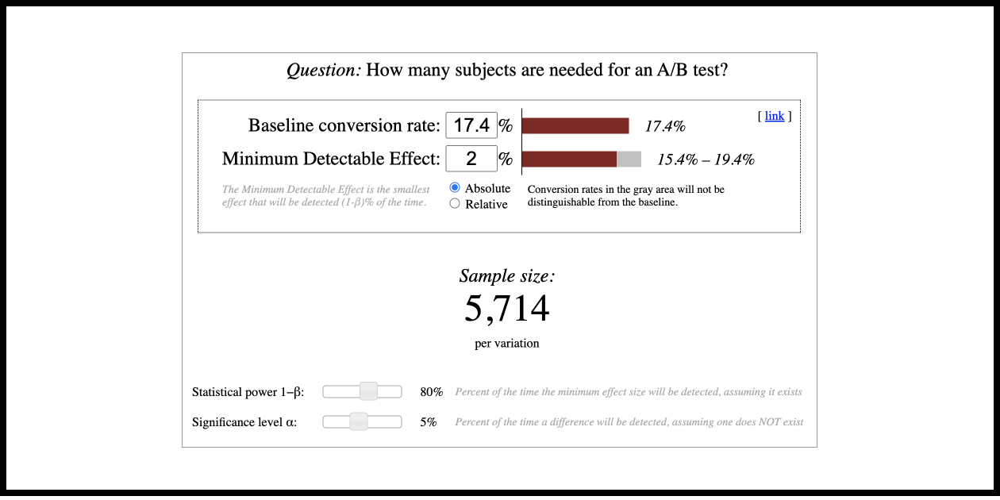
Золотое правило для фильтрации гипотез следующее: ожидаемый эффект от эксперимента должен соответствовать текущему размеру продукта.
Структура интервью
Разговор был построен так, чтобы покрыть весь путь пользователя от момента знакомства с продуктом до момента отказа от его использования.
В вопросах часто добавляется просьба привести примеры из личного опыта и подробно их описать. Это хорошая техника, чтобы получить больше фактов и меньше фантазий или интерпретаций пользователя.
- Расскажите о том, какие сервисы для общения вы используете на мобильном телефоне.
- Какие задачи вы решаете в каждом из этих сервисов? Как часто ими пользуетесь? Приведите примеры ситуаций за прошлую неделю, когда вы ими воспользовались.
- Расскажите, как вы узнали об Instachat.
- Почему вы решили скачать Instachat?
- Расскажите про первый раз, когда вы запустили Instachat. [На этом вопросе мы просим пользователя открыть приложение и найти первую переписку, чтобы получить максимум контекста]
- Что вы делали?
- Как и кого вы приглашали в приложение, если приглашали? Опишите, как именно и с помощью какого метода?
- Как вы объясняли знакомому, почему надо скачать приложение?
- Чего вы ожидали от первого использования приложения?
- Расскажите про ваш первый опыт взаимодействия со Smart Reply.
- Сравните эффективность и скорость переписки в обычном мессенджере и в Instachat.
- В итоге вы не стали пользоваться приложением. Почему?
- Какие из описанных вами проблем были самыми критичными?
- Есть ли что-то еще, о чем вы хотели бы рассказать нам?
Вы нерепрезентативны, но…
Вы должны всегда помнить, что вы нерепрезентативны. Строить продукт, основываясь исключительно на личных предпочтениях — это путь в никуда.
Но если то, что вы делаете, не находит никакого отклика у вас, у команды или у более широкого круга тестовых пользователей, то необходимо начать разбираться, почему так происходит. Чаще всего проблемы, которые проявляются на небольшом количестве лояльных пользователей, с ростом аудитории будут становиться только больше.
При работе над продуктом важно найти тонкую грань между доверием и недоверием к собственной интуиции. А в идеале использовать свои ощущения как источник для формирования гипотез, которые затем быстро и дешево проверять доступными инструментами.
Процесс поиска способов решения найденных проблем
Процесс был устроен следующим образом:
- Сначала провели брейнсторм с участием всех членов команды.
- После этого идеи были сгруппированы и приоритизированы.
- Затем вы и Джон отобрали те идеи, которые стоило проверить в первую очередь.
Среди самых многообещающих способов решить найденные проблемы оказались:
- Сократить число предлагаемых вариантов до двух или одного.
- Не отправлять сообщение сразу при нажатии на один из вариантов ответа в Smart Reply, а сначала дать пользователю его отредактировать.
- Не показывать Smart Reply, когда пользователи обсуждают сложные темы в переписке.
Продакт-менеджер ≠ придумыватель идей
Ключевая польза продакт-менеджера вовсе не сводится к придумыванию идей. Идеи — это лишь базовый материал для построения и развития продукта. Очень важный материал, но с ним еще надо хорошенько поработать, чтобы получилось что-то дельное.
Задача продакт-менеджера заключается в том, чтобы создать среду, где вся команда понимает, какую задачу и для кого решает продукт, а также какие есть ключевые способы повысить эффективность продукта.
При наличии такого контекста придумывать идеи будет вся команда. Даже если вы очень хороши в генерации идей, увлеченная команда из десяти человек повысит поток идей как минимум в несколько раз. Лучше потратить время на то, чтобы организовывать среду и процесс, где все вовлечены в придумывание идей, а не только один или два человека.
Еще один негативный аспект собственных идей — предвзятость к ним. Собственные идеи всегда кажутся лучше, чем они есть на самом деле. Надо учиться объективно смотреть на вещи и критично оценивать свое творчество. Хотя это и очень сложно.
Когда идеи собраны, то тут и начинается настоящая продуктовая работа. Их нужно обработать, развить, приоритизировать, оценить потенциал, найти пути максимально дешево и эффективно проверить, предусмотреть потенциальные проблемы и неожиданные сложности.
Любой продукт — это сложная система с большим количеством неочевидных взаимосвязей. Изменения в одном месте могут неожиданно испортить что-то в другом. Главная трудность работы с новыми идеями — это поиск путей, как интегрировать их в существующий продукт, но при этом не поломать уже работающие его части, не создать горсть новых проблем.
Не менее важно добавлять новые вещи в продукт, сохраняя его цельность и логическую стройность. Навешивать новые фичи ценой создания новых сущностей и всевозможных исключений — тупиковый путь, ведущий к продукту, напоминающему монстра Франкенштейна.
Метрики на раннем этапе жизни продукта менее важны, чем понимание пользователей но, с ростом продукта важность данных и метрик в принятии решений растет
Работа с данными позволяет понять, как люди используют сервис, а также как продуктовые изменения влияют на их поведение. Но данные не способны ответить на вопрос о том, почему пользователи делают то, что они делают. Здесь на помощь приходят качественные методы исследования пользователей.
Данные и качественные исследования способны ответить практически на любые вопросы, которые будут возникать у продуктовой команды. Самое важное — уметь задавать правильные вопросы, а потом выбирать подходящий инструмент для поиска ответов.
На раннем этапе развития продукта качественные исследования имеют больший вес в принятии решений. По мере роста продукта роль количественных данных постепенно возрастает. Когда у продукта будут сотни тысяч или миллионы пользователей, то основывать решения исключительно на качественном фидбеке от десяти пользователей будет уже неоправданно. В этот момент все большую роль в принятии решений будут играть данные и эксперименты.
Но качественные методы исследования пользователей не должны при этом уходить на второй план. Вам нужно продолжать инвестировать в углубление своего понимания пользователей и их задач. Просто в крупных продуктах эти методы уже начнут применяться не глобально, а более точечно.
Например, вы можете заметить сильное падение на определенном шаге воронки. Чтобы более осмысленно решать эту проблему, надо будет понять, почему люди отваливаются, а значит, воспользоваться методами User Research.
Продукты строятся в обратном направлении от найденной ценности
Момент, когда вы находите что-то работающее в продукте, меняет все:
- «До» вы продирались вперед сквозь неизвестность в поисках ценности;
- «После» вы пойдете в обратном направлении — от найденной ценности к рынку.
Важно понять, что «до» вы не строите продукт — вы ищете то, каким он должен быть. «После» же вам надо убедиться, что в том, что вы нашли, действительно есть ценность (наличие product/market fit) и необходимый потенциал (рынок достаточного размера).
И если это так, то нужно отбросить все, что вы успели насоздавать в процессе поисков, и начать строить продукт заново на новом проверенном фундаменте.
«До»
Деятельность команды на этапе «до» нахождения ценности (до наличия product/market fit) заключается в том, чтобы формулировать гипотезы ценности и быстро их проверять, а в случае опровержения гипотезы — извлекать уроки и продолжать поиски работающей модели.
На старте вы находитесь в состоянии полной неизвестности. С каждым следующим шагом вы немного освещаете окружающее вас пространство. На основе новой информации вы делаете предположение о том, куда стоит пойти, чтобы создать добавочную ценность для пользователей.
Это хаотичный и плохо структурируемый процесс. Более подробно мы обсудим его в следующей главе.
«После»
Когда команда находит что-то работающее и доказывает, что в этом есть достаточно добавочной ценности (подтверждается наличие product/market fit) и потенциала, принцип работы кардинально меняется.
Если до этого делались смелые и фундаментальные изменения, продиктованные знаниями, полученными из прошлых итераций, то теперь команда фокусируется на найденной ценности, ставит ее в фундамент, на базе которого начинает заново строить продукт.
Это подразумевает следующие действия:
- Избавление от всего лишнего и отстраивание продукта от того, что доказало свою ценность;
- Поиск эффективных способов доносить созданную ценность до целевых пользователей.
Вот как этот процесс описывает известный сценарист Robert McKee (Роберт Макки) в контексте работы над историей: «Как только кульминация придумана, начинается серьезное переписывание истории, причем от конца к началу, а не наоборот. Поток жизни движется от причины к следствию, однако творческий процесс имеет обратное направление. Мы начинаем с конца, чтобы убедиться, что каждый образ, кадр, действие или строка диалога каким-то образом связаны с главной развязкой или формируют ее. Если что-то можно удалить, не ослабляя воздействия концовки, то это следует сделать без колебаний»
Сначала вам предстоит построить процесс активации в продукте — то есть процесс донесения ценности до новых пользователей. После этого вам предстоит строить каналы доставки продукта до рынка — то есть процесс донесения ценности до людей, которые еще не знают о вашем продукте.
«… каждый образ, кадр, действие или строка диалога каким-то образом связаны с главной развязкой или формируют ее. Если что-то можно удалить, не ослабляя воздействия концовки, то это следует сделать без колебаний».
На раннем этапе создания нового продукта вы не строите продукт. Вы проверяете ключевые предположения, лежащие в основе будущего продукта, пытаясь понять, можно ли вокруг него построить успешный бизнес, и если да, то как.
Дистрибуция — это важно
Создание эффективных каналов дистрибуции — это вторая ключевая продуктовая задача.
- «Превосходство в продажах и каналах дистрибуции может позволить вам выиграть рынок даже с продуктом, который слабее конкурентов. Обратное при этом неверно. У вас может быть лучший продукт, который идеально вписывается в устоявшиеся привычки людей. Продукт, который любого, кто его пробует, влюбляет в себя моментально. Но если для него не будет найдено эффективных каналов дистрибуции, то его ждет провал»
- «Для большинства компаний число эффективных каналов продаж равно нулю: чаще всего причиной краха бизнеса оказывается не плохое качество продукта, а проблемы с распространением. Сумев заставить работать как следует один единственный канал дистрибуции, вы построите грандиозный бизнес. Если вы попытаетесь задействовать несколько, но ни один не заработает — вам конец».
- «Бороться за внимание нескольких тысяч похожих друг на друга потенциальных клиентов, которым продукт сильно упрощал жизнь, оказалось намного проще, чем за внимание миллионов пользователей PalmPilot, которые были разбросаны по всему миру и имели мало общего между собой».
- «Идеальный целевой рынок для стартапа — небольшая группа вполне определенных людей, которую обслуживает небольшое число конкурентов или вообще никто. Любой большой рынок – плохой выбор, тем более если на рынке уже есть сильная конкуренция. Именно поэтому идея завоевать 1% рынка размером в 100 миллиардов долларов – это всегда красный флаг». Питер Тиль, «От 0 к 1» (3 и 4 цитаты относятся к проверке гипотезы роста и работы с каналами привлечения)
Facebook*. Доказательство ценности продукта и стратегия роста на раннем этапе
Первая версия Facebook* была запущена 4 февраля 2004 года на домене thefacebook.com. Сначала сервис был доступен только для студентов Гарварда. Для регистрации было необходимо иметь почту с доменом @harvard.edu.
Такое ограничение может показаться странным решением для продукта молодой компании, фокусом которой является быстрый рост. Но как вы уже заметили, стратегия разделения рынка на маленькие сегменты и последовательного захвата каждого из них часто используется для запуска новых продуктов.
Например, PayPal последовательно продавал свой сервис активным продавцам на eBay. BlackBerry, прежде чем выйти на потребительский рынок, сначала продавали свой продукт крупным компаниям. Amazon сперва закрепился на книжном рынке, а потом стал плавно захватывать другие ниши ритейла. Схожие стратегии использовали eBay, Pinterest и многие другие сервисы.
Самых первых пользователей Facebook* привлек через отправку письма с описанием сервиса на одну из студенческих почтовых рассылок. Через день на сервисе уже зарегистрировались 1200 человек. Через месяц после запуска половина студентов Гарварда использовала сервис.
Такие результаты запуска на маленьком рынке (для Facebook* это были студенты Гарварда) — это как раз то самое доказательство ценности и востребованности сервиса, которое любая команда должна ждать от ранней версии своего продукта.
Важно понимать, что на тот момент Facebook* был далек от сегодняшнего сервиса. Там не было ни новостной ленты, ни сообщений, ни видео, ни игр, ни мобильных приложений.
Там были только профили пользователей. Но даже эта скромная функциональность обеспечила продукту вирусный рост и феноменальный Retention. Именно этот ранний успех стал той плодородной почвой, на которой позже выросли такие безумно успешные продукты как новостная лента, мессенджер, группы.
Запуск Facebook* в Гарварде показал, что после небольшого толчка продукт может быстро распространяться в одном конкретном университете. Университет был идеальной средой для Facebook*, так как студенты одного учебного заведения представляют собой самодостаточную социальную сеть.
Используя отработанную на Гарварде схему, Facebook* стал последовательно запускаться в других университетах: в Стэнфорде, в Колумбийском университете, в Йеле и других университетах «Лиги плюща». Вскоре почти все университеты США использовали Facebook*.
После этого началась международная экспансия. 1 октября 2005 года Facebook* стал доступен для университетов в Англии, потом в Австралии и Новой Зеландии, а вскоре и во всех других странах мира. С сентября 2005 года Facebook* по аналогичной схеме начал покорять школы.
Вы можете сказать, что Facebook вполне мог бы вырасти и без такого последовательного движения по образовательным сообществам. Достаточно было бы просто запустить сервис на широкую аудиторию, а потом привлекать туда пользователей с помощью рекламы. Это маловероятно. Последующий опыт неудачного запуска социальной сети Google+ опровергает эту гипотезу. Даже с учетом практически неограниченных маркетинговых ресурсов поискового гиганта, которые были задействованы на полную мощность.*
Продукт определяет доступные каналы дистрибуции
Для разных продуктов работают разные каналы дистрибуции.
Например, вы не сможете продавать стиральный порошок с помощью личных продаж. Равно как у вас не получится продать сложный корпоративный софт стоимостью в десятки миллионов долларов через поисковую рекламу, ведущую на сайт, где вы просите ввести данные карты для оплаты.
Давайте вновь обратимся к книге «От 0 к 1», где Питер Тиль предлагает очень хорошую классификацию продуктов по тому, какие каналы дистрибуции для них доступны.
Ключевая идея в том, что чем сложнее и дороже продукт, тем более персонализированные каналы нужны для его распространения. Питер Тиль выделяет несколько сегментов в зависимости от LTV, то есть того, сколько прибыли клиент принесет за все время использования продукта. Именно эта метрика во многом определяет то, какие каналы имеет смысл использовать для дистрибуции.

LTV от $1 миллиона. Такие продукты требуют персонализированных сложных продаж, причем обычно они совершаются на уровне топ-менеджмента компании. Время на заключение подобной сделки может занимать годы.
Примеры — SpaceX, Oracle.
LTV от 100 тысяч. Большинство B2B-продуктов попадают в эту категорию. При такой сумме сделки строить продажи через CEO нет смысла. Такие продажи можно совершать на более низком уровне с помощью специализированной команды. Главной сложностью является создание отлаженного воспроизводимого процесса, который позволит эффективно масштабироваться.
Примеры — Dropbox for Business, Jira by Atlassian.
LTV от 10 тысяч. Продукты с таким чеком попадают в так называемую «мертвую зону». Дело в том, что такие продукты требуют личных продаж, но при их LTV использование этого канала продаж часто становится неоправданным, так как стоимость привлечения клиента получается выше, чем будущий доход от него. Также для таких продуктов редко работают более широкие каналы дистрибуции, как интернет или ТВ-реклама из-за отсутствия возможности хорошо таргетировать целевых клиентов и сложности продукта. Сервисы в этом диапазоне LTV иногда находят успех в связке контент-маркетинга и внутренних продаж, но подобный подход также имеет свои границы и работает не для всех.
Примеры — Buffer, Basecamp.
LTV <$100. В эту категорию попадают массовые продукты. Например, продукты на полках супермаркетов, вещи, продаваемые в интернет-магазинах и торговых центрах, мобильные игры и приложения. Это массовые продукты, поэтому для них работают широкие рекламные каналы и классический маркетинг.
Примеры — Twix, Clash of Clans, Tinder.
TABLE without id
file.outlinks AS "OUTGOING",
file.inlinks AS "BACKLINKS"
WHERE file.name = this.file.name